01
Alert
The official alert becomes the entry point
Region and time from official sources.
A mobile app that helps people quickly understand an air raid alert and reach the nearest shelter.
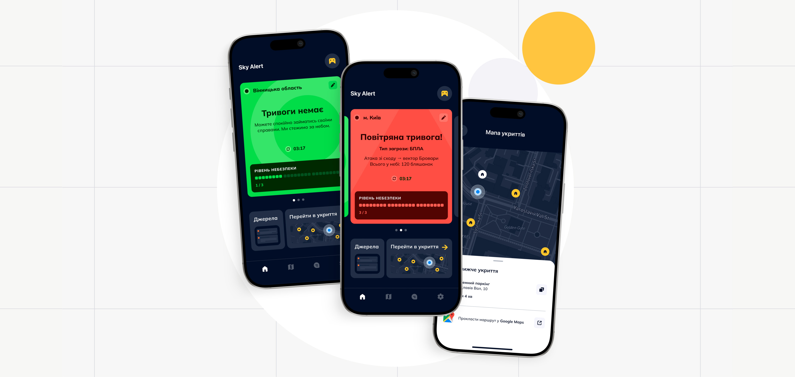
The siren goes off. Notification appears. It tells you almost nothing about what's actually happening.
Is it a drone or a missile? Is the threat nearby? Do you need to get to a shelter now or can you wait?
To answer those questions, people leave the alert and start checking other sources. Telegram. Maps. Local channels. It takes another three to five minutes before they know whether to act or wait.
Sound triggers alert
Notification arrives
Missile? Drone?
Direction unclear
Multiple sources
Act or wait?
During every alert, people follow the same sequence: understand what is happening, decide whether it affects them, then act if necessary.
Region and time from official sources.
Threat type, direction
and estimated area.
Distance and map.
Estimated time and directions.
Alert -> Context -> Shelter -> Route.
Research combined competitor analysis, user observation, informal interviews and firsthand experience using alert apps during air raids.
Together, these methods revealed what people actually do after an alert, not just what existing apps were designed to support.
The notification was rarely the end of the journey. It was the starting point.
People immediately turned to other sources to understand whether the threat affected them.
No single source answered the whole question.
Telegram explained the threat. Maps showed nearby shelters. Local chats confirmed whether they were actually open. People had to piece the answer together themselves.
Finding shelter almost always meant switching between multiple sources. Practical details like accessibility, conditions, or availability were often missing.
The product wasn't designed to explain the alert. It was designed to support the next decision.
Focus on the threat
Focus on the next action
During an alert, attention is limited. The interface was designed around one question: what needs to be visible first?
Always visible. Drives immediate action.
Missile, drone, aircraft
To which region
Nearest open shelter
Available one tap away. Supports verification.
Visual spread overview
Air Force, regional channels
Accessible but deprioritized. Not time-critical.
Peer support
Stress relief
Signals that attention is needed. Entry point into the experience.
Reduce uncertainty before action. Official context before making a decision.
Show the nearest available shelter.
Remove friction when every second matters. The fastest path to safety.
Alert State. Answers the first question immediately: is something happening right now?
Threat Context. Explains what is happening and whether it affects the user.
Shelter Access. Removes the extra step between recognizing the threat and finding shelter.
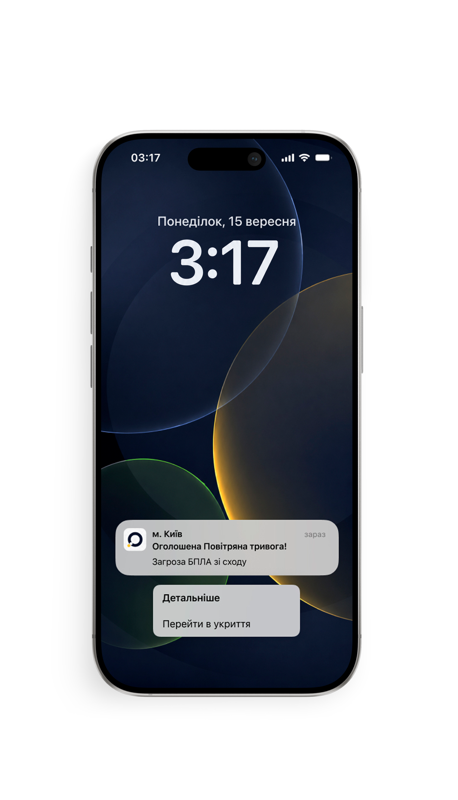
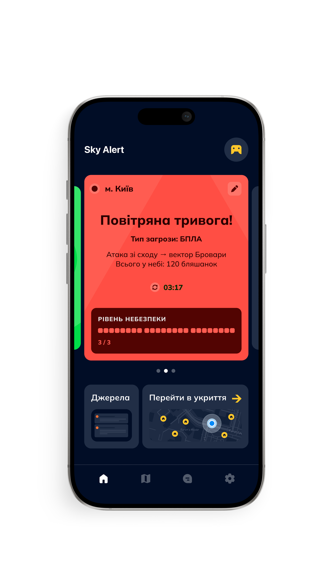
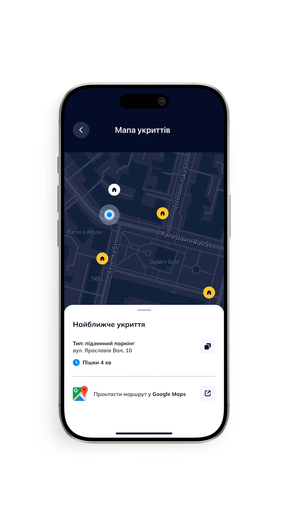
Supporting tools add context without interrupting the core flow. The threat map shows how the situation is evolving. Trusted sources allow people to verify information without leaving the app. Alert history helps identify patterns beyond a single event.
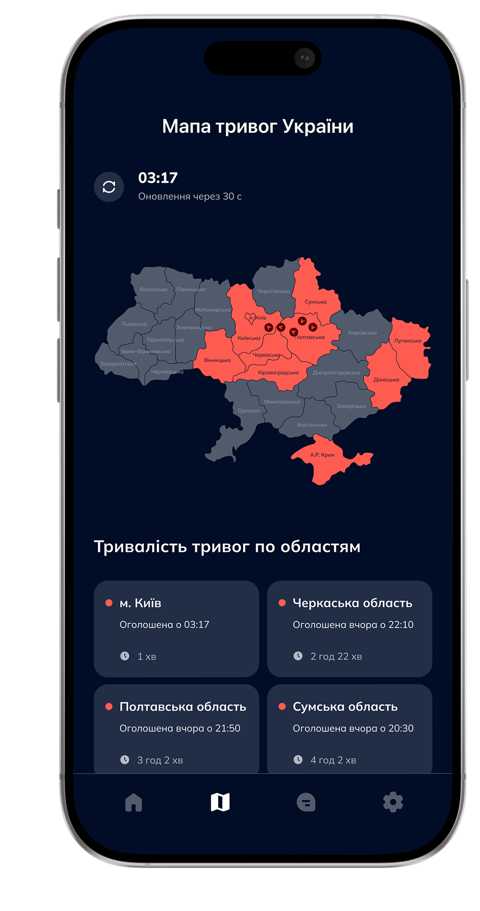
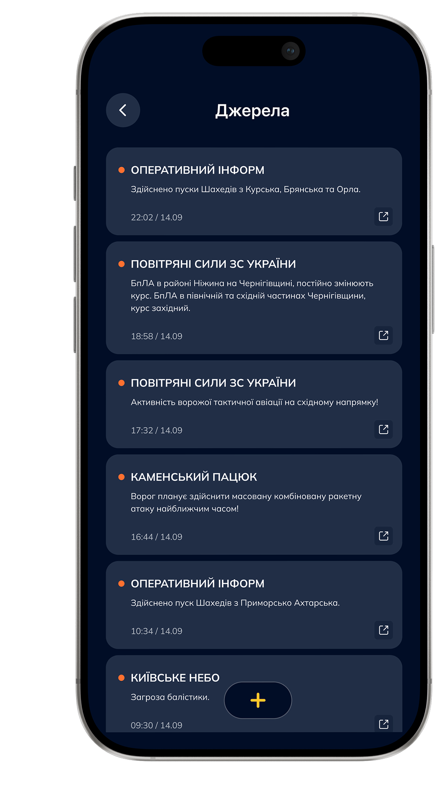
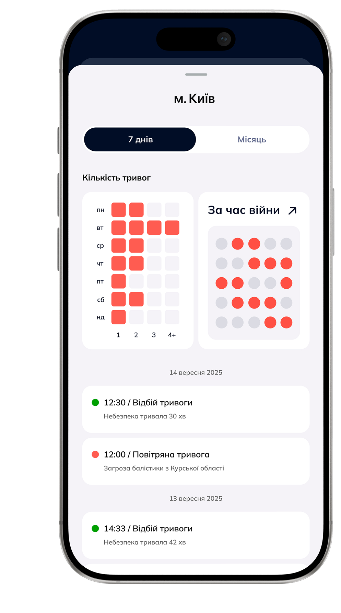
People follow different regions and live different routines. Region selection keeps multiple important locations visible at once, while notification settings adapt alerts to everyday life without changing the core experience.
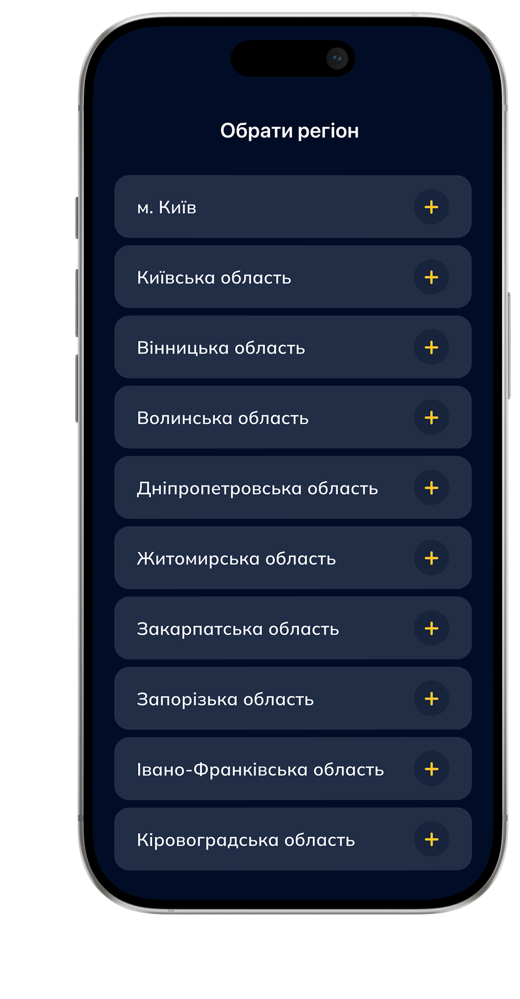
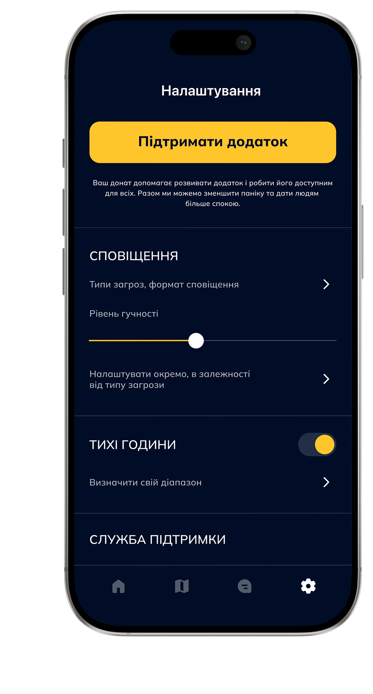
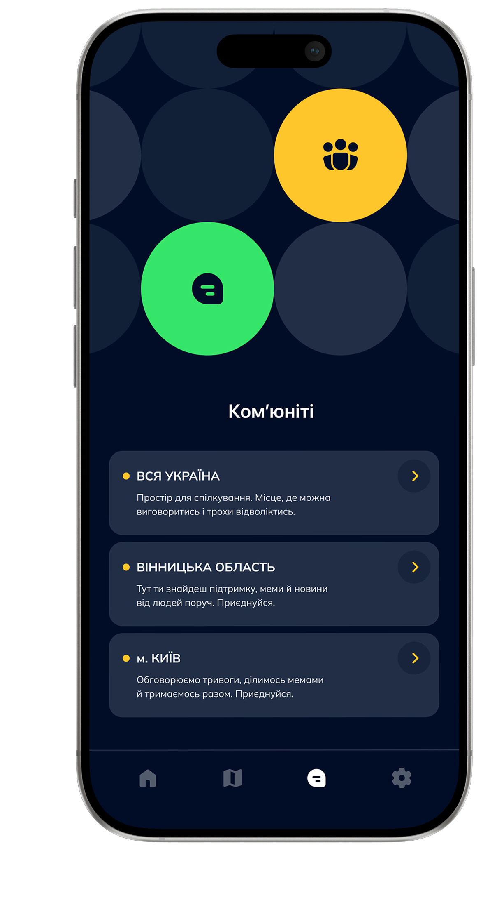
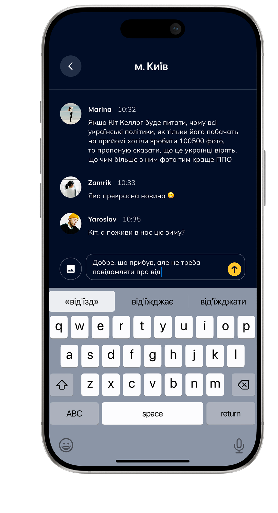
Community. Gives people a way to share local context that official sources often can't provide.
Mini-Game. Offers a distraction while waiting. Every coin earned can be turned into a donation.
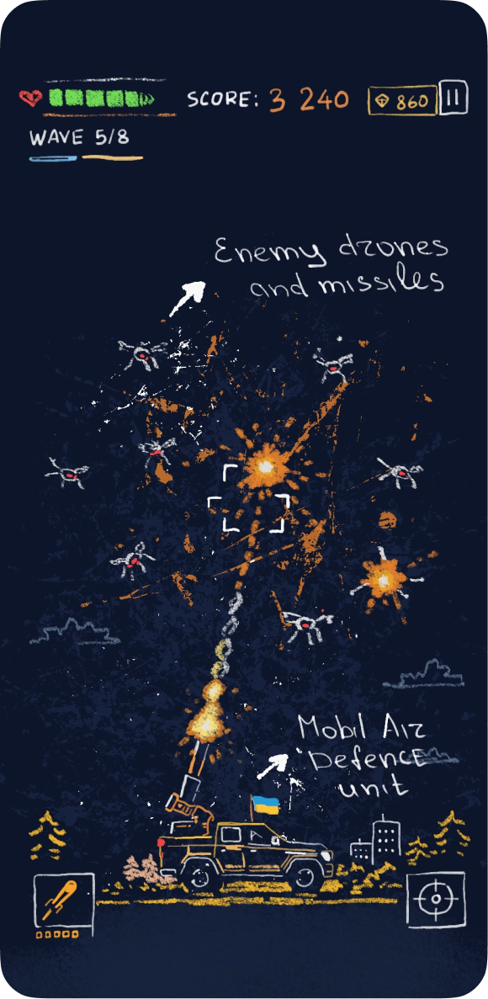
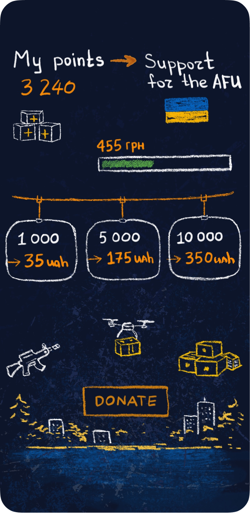
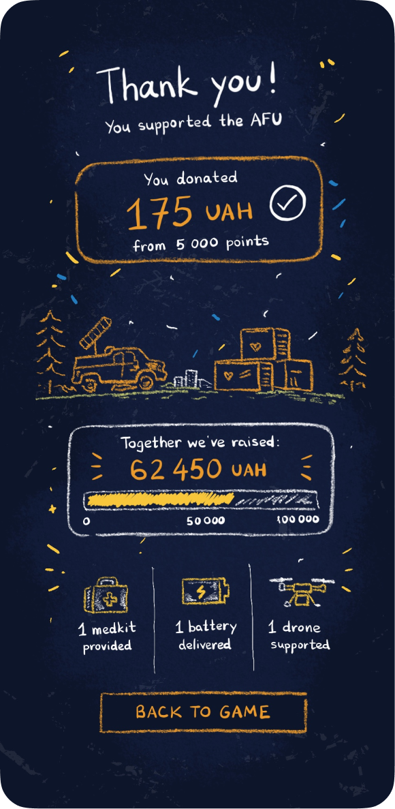
Not every problem is solved by a new feature.
The product stays
focused on a single job: helping people understand the situation
and decide what
to do next.
It adds context to alerts that already exist.
It provides information. The final decision is up
to the person.
The interface stays calm because the situation
is already stressful enough.
It complements official sources by gathering essential information in one place.
At first, showing more felt like the obvious answer:
a complete
threat map, alert history and details from every available
source. But every new layer
of information required more time to
read before people could decide.
Eventually, I realized the product didn't need to explain everything. It needed to answer one question as quickly as possible: should I act now or can I wait? Everything else exists to support that decision, not compete for attention.